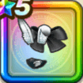

ゆきうさぎの髪留め
攻略班 9.5点 / ゾンビ系への耐性+5%ドラゴン系への耐性+5%ゾンビ系への耐性+5%物質系への耐性+5%スキルの斬撃ダメージ+8%ヒャド属性斬撃・体技ダメージ+7%ドルマ属性斬撃・体技ダメージ+7%
くわしい特徴
【レベル別習得スキル】 Lv1ゾンビ系への耐性+5% Lv5ドラゴン系への耐性+5% Lv8スキルの斬撃ダメージ+8% Lv10【ニンジャ】すべての状態異常成功率+2% Lv12ヒャド属性斬撃・体技ダメージ+7% Lv12ドルマ属性斬撃・体技ダメージ+7% Lv15すべての状態異常成功率+3% Lv18ゾンビ系への耐性+5% Lv20すばやさ+7 Lv23物質系への耐性+5% Lv25さいだいMP+5 【限界突破スキル】 1凸攻撃力+12 2凸すばやさ+12 3凸守備力+12 4凸さいだいHP+12